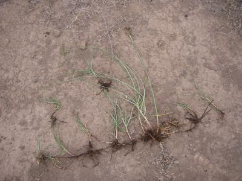
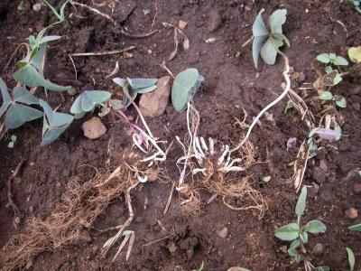
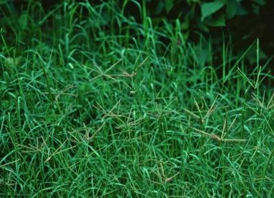
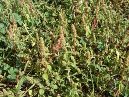
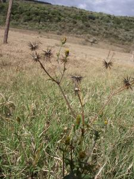
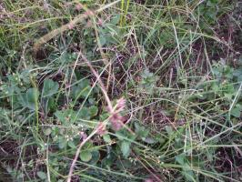

Weeds
Weeds

{kind=link}
{kind=link}
{kind=link}
{kind=link}
Introduction - What is a Weed?
Another definition is that a weed is a plant, the use of which has not yet been discovered. This definition fits in better with the natural law of Biodiversity, nature striving to create balances in vegetation/soil and fauna (creatures living off plants). Farmers in Kenya are often observed to be leaving edible weeds in the fields when weeding, not enough to threaten the main crop but just enough to have early maturing vegetables to eat until the main crop is ready.
In an integrated approach to weeds as part of biodiversity a connection can also be made to growing companion crops which will cover the ground and do the job weeds do in a natural system, namely keep the soil covered protecting it from erosion.
Notorious (troublesome) weeds are generally divided into two major categories:
- Annual weeds (e.g. purple witchweed/Striga)
- Perennial weeds (e.g. couch grass and sedges)
Management practices depend on which type is predominant in the field.
Biology and Ecology of Weeds
Annual weeds
These are the weeds germinating from seed along with every crop and going through a full lifecycle from germination to flowering to setting and dropping seeds in one season. All healthy topsoils have myriads of different types of weed seed, and every time the soil is disturbed a new lot germinates, in order for the ground to keep itself covered. If we leave these weeds to grow unchecked, the crop we are trying to cultivate will not do well as there is too much competition.
For more information on purple witchweed (striga) click here
Perennial weeds
These are weeds with a root system that survives the dry seasons and stay alive for two or more seasons. If not controlled, perennials can completely crowd out crops in some cases by sending a dense network of underground roots and stolons in all directions. They are very difficult to control as the roots go deep and a very small piece of root or stem can regrow after weeding and create new networks.
Perennials such as couch grass and sedges have a function though: they help the soil restore aeration and natural life in the patch of ground where they grow. They also protect the soil from soil erosion, being carried away by water or wind and the grasses provide fodder for livestock. . If these perennial weeds cover unproductive corners of the farm or steep hillsides they are not harmful, so far they do not invade the crop area.
Sedges (Cyperaceae) have smooth leaves and triangular flower stems. The clustered seed heads differ according to species (there are more than 50 species in East Africa)(Terry 1976). They have underground bulbs, stolons or tubers which can remain dormant for long periods of time. They are often only minor problems in farms with a mixed weed population.
Sedges are not real grasses and most livestock only eat them if there is nothing else available.
The most common species of Cyperus includes Cyperus longus with underground stolons like couch grass and no visible "nuts". This is particularly troublesome in rice fields and other waterlogged locations. C.rotundus , more common in hot areas, has underground nuts and thin connecting stolons.
|  |
| Sedge grass (cyperus longus) with underground stolons |
| (c) A. Bruntse, Biovision
|
Another troublesome sedge especially for non-tillage farmers is "watergrass" - small plants with a tiny underground "nut" and a prolific seed producer.
Sedges (including nutsedges and watergrass) release chemicals that reduce the growth of other plants near them, which is why most crops grow very poorly in the presence of sedges.
Among the many weeds we see everyday some do not seem to have any function that we know of. But this does not mean they are useless. However, Oxalis spp. in spite of its tiny size has been found to reduce the yield of maize up to 24% (Terry, 1984).
If you look carefully, most of these perennial weeds are most serious where the soil is compacted, waterlogged or has generally become infertile, or on mechanized farms where annual weeds have been killed by herbicides.
|  |
| Oxalis growing and some uprooted - note the small underground bulbs from which the stems break very easily. |
| (c) A. Bruntse, Biovision
|
|  |
| Couch grass (Cynodon dactylon) is a perennial grass, with underground rhizomes and on the ground runners. |
| (c) Charles T. Bryson, USDA ARS, www.insectimages.org
|
For more information on couch grass click here
Weeds and soil fertility
In studying the relationship between weeds and soil fertility a clear connection appears. Of all the seeds stored in the topsoil, those suited to the soil status will be the ones germinating. Certain weeds will germinate on very poor and damaged soil and very different ones will grow on a soil in good fertility.
Weeds, as any other plants, take up nutrients from soil and air and return them to the soil when they die. On a poor soil the weeds growing will be those that are able to extract or fix nutrients the more demanding plants are not able to take up under the same conditions. The poor fertility plants/weeds will therefore enrich the soil and slowly improve it, if left to do their job. High fertility weeds left to do the same on fertile soils will improve the soil even faster as they take up/fix higher amount of nutrients.
It is known that too many weeds reduce yields, but not much research has been carried out on retaining some weeds for soil protection but keeping them down to a manageable level, so as not to interfere with the main crop.
On slopes there are many recommendations for strip cropping in order not to loose valuable top soil. The grass strips then become soil conservation measures. However, very good results have been achieved by The Conservation Agriculture research team on replacing weeds as ground cover with legumes, both as far as yields and reduced workload for the farmers is concerned. (IIRR 2005)
Pest and Disease Management
Pest and disease management: General illustration of the concept of Infonet-biovision

This illustration shows the methods promoted on infonet-biovision. The methods shown at the top have a long-term effect, while methods shown at the bottom have a short-term effect. In organic farming systems, methods with a long-term effect are the basis of crop production and should be of preference. On the other hand methods with a short-term effect should be used in emergencies only. On infonet we do not promote synthetic pesticides.
Annual Weeds
1. Edible weeds
Many weeds are useful, some are edible and very nutritious (e.g. amaranth, nightshade, mustard, etc.) and in traditional gardens some of these are often left to grow and harvest for the family meals. Improved varieties with bigger leaves have been developed commercially and these are planted as traditional vegetables for market and home use, and show a much better nutritional content than the normal commercial vegetables. Mustard plants also contain compounds that will combat such soil diseases as bacterial wilt and nematodes (See also biofumigation).
|  |
| Amaranth. |
| (c) A. Bruntse, Biovision
|
For more information on amaranth click here
2. Medicinal weeds
Other weeds such as blackjack, Mexican marigold and many others (normally the smelly ones) have plant protection properties and yet others (such as the Wairimu Waweru of Kinangop) have medicinal properties which can be very valuable in a self sufficient farming system, and provide medicine for animals and people.
|  |
| Blackjack. |
| (c) A. Bruntse, Biovision
|
| Mexican marigold. |
| (c) A. Bruntse, Biovision
|
Usually the old people in the area will know which weeds have medicinal properties, what they can be used for and how to prepare medicine from them. Ask the elders about the weeds; they will be delighted to teach and perhaps they can even help develop a little business selling such medicine. It is also good to keep records of knowledge about medicinal weeds/herbs as such knowledge is fast disappearing, and could become very useful in the future.
If you have any useful tips to share with other farmers through this website please send us a note about it and we shall contact you and quote you by name on this site.
3. Nitrogen fixing weeds
 |
| Healthy Desmodium soil cover in Passion plantation reduces weeding costs and benefits soil and crop. When the legumes become too vigorous, they can be cut and used as animal feed or mulch for other crops. |
| (c) A. Bruntse, Biovision, courtesy of RealIPM, Thika, Kenya.
|
Still other weeds such as various clover varieties, desmodium and other legumes fix nitrogen from the air and help improve soil fertility. Weeds such as tithonia (wild sunflower), also helps improve soil fertility when the leaves are incorporated into the soil as green manure.
Many farmers are always complaining about the Kenya white clover , which is a powerful growing legume (A. Bruntse, personal communication with farmer groups in the Rift Valley of Kenya) . It falls in between an annual and a perennial plant, as it produces seed in the first season, but plants do not die and continue into the next season if moisture levels permit. It is a creeper which when left undisturbed develops large patches of dense clover. Farmers say it gives cattle bloat. This can be true if animals are allowed to graze while the leaves are wet (same as for any other high protein legume), but if you wait till the leaves are dry and mix the clover leaves with grass, it is very good protein rich feed for all livestock. Clover can also be cut and dried as hay along with grasses.
Clover overpowers other weeds including couch grass, many other grasses and sedges and as such can be used to control them. In Europe clover is used in grass mixes for pasture feed production for grazing, hay making and silage making, and it has been measured that a good mixture of clover grass can fix over 300 kg/ha of nitrogen in one season (6 months). In Kenya, clover is a versatile plant, which can survive the shade underneath maize plants, provide ground cover on walking paths and non utilized patches of crop land - there is always that corner where nothing else grows. It can greatly help in preventing soil erosion by protecting the soil from the sun and the rain.
So farmers, should not kill the clover and other nitrogen fixing legumes, but experiment with them and let them help improve the fertility of the soil. When patches are getting too big, dig up some of the plants and transfer to areas that have no legumes. Taller plants are not affected by clover growing underneath, but small plants with superficial root systems need to be given space for their own initial root development.
For more information on purple witchweed/striga click here
Perennial Weeds
|  |
| Strawberry field with sedges. |
| (c) A. Bruntse, Biovision
|
For more information on couch grass click here
Weed Control
Control of annual weeds
Many methods and gadgets have been devised to combat annual weeds at an early stage to get optimum yield of our food crops:
1. Digging or pulling the weeds and removing them from the field (in small gardens). This removes from the field all the nutrients collected by the weeds.
2. Shallow cultivation at an early stage and leaving the weeds to dry on top of the soil either by hand or by animal or tractor mounted equipment. Tools include row cultivators, small grain seed spring harrows and hard brushes for row treatment. The first 2 methods as well as no 5 and 6 are developed in the cool temperate climates and generally aim to keep the soil in between crop plants bare. Under the African sun, bare soil is also unprotected soil. Unprotected soil is prone to erosion, crusting after heavy rains and general soil degradation. There will also be a flush of germination of weeds after every rainfall as nature strives to repair the damage, and repeated energy consuming weeding operations will need to be carried out.
3. Slashing weeds at ground level when 10-15 cm tall and definitely before flowering, then leaving them on the ground as mulch, reduces the weeding work substantially. It is much lighter work to slash than to dig with a hoe (jembe) and intervals between slashing can be longer than between traditional weeding/digging. This method can also be using either hand slashing or animal/tractor drawn equipment such as mowers or the knife rollers developed by Conservation Agriculture studies in East Africa.
4. Planting of ground cover plants especially legumes to crowd out further "weed" germination. This not only provides ground cover but also enriches the soil, and will eliminate further weeding operations. The legumes will often continue growing after the main crop is harvested, providing soil protection until the next crop is planted. They can also become useful for feeding livestock or for incorporating into the soil as green manure.
5. Burning. Mechanised farming can choose between a variety of equipment for weed control by burning, both back pack types and tractor mounted equipment. This method will not improve soil fertility, but instead burn off badly needed humus in the top layer of the soil.
Herbicide spraying is not allowed in organic farming. This method uses various plant poisons to kill the weeds, all of which are harmful to natural systems and some of which can stay in the soil for a very long time and become part of the food we eat. There have been many examples in East Africa especially from flower companies renting land from small farmers, returning that land poisoned to an extent that attempts at selling export food crops from this land has been rejected from the export markets due to too high levels of herbicide contamination. Do we really want to eat such food ourselves?
Control of perennial weeds
Management of sedges:
- Ground covering legume plants and mulches can play a very important role in both improving the soil fertility and combat perennial weeds. Clover and other leafy and strongly growing legumes planted in sedge infested land will both overpower the sedges and enrich the soil. In the case of watergrass or nutsedges, harrowing only makes the problem worse, as the root nuts will be separated from the stems and given the opportunity to send out many new shoots.
- Solarisation. Covering a sedge infested piece of land with black polythene after wetting it, and leaving it exposed for some days to hot sunshine, will completely eliminate any of the sedge species. However plastic is expensive, so if it cannot be afforded try the first option: ground cover with legumes. For more information on solarisation click here
-
Mulching. C. rotundus has been successfully controlled with heavy mulching. Initially the weeds grow prolifically, but after a wet period they are easy to remove by careful hand pulling making sure the "nut" does not stay in the soil. This does not work on hard unmulched soils.For more information on mulching click here
-
Hand digging. Very careful hand digging with a knife ensuring all the little underground bulbs are removed can give a small reduction in Oxalis populations (annual or perennial), but is very time consuming and bound to leave a few bulbs here and there which will waste no time in germinating.
Weed control in row crops
Best weed control there is, is to keep the soil covered with useful plants during the growing seasons and with mulch or tree cover as far as possible during dry seasons. Once the green manure crops cover the soil in between the maize or cassava, there is no more need for weeding. Remember weeds/plants are nature's tool to create biodiversity and a healthy soil. Help nature create the biodiversity and the heavy weeding work (fighting nature) becomes much lighter.
Weeds or green manure left in the field after a crop should be left to grow during the dry season if they can. If not they will at least protect the soil which can then be prepared for planting just before the rains are expected. On sloppy land which has not been terraced, cultivate in strips across the slope only. Any soil washing off will then be caught by the next strip of weeds.
Mechanical tractor pulled row cultivators are also available for those who can afford them. Alternatively hand weeding is needed.
Weed control in small grain crops
Small grains such as wheat, barley, etc are normally planted in dense populations as their rate of ground cover per plant is fairly poor. This poses problems for weeding. In Europe and other places there is equipment specially constructed for mechanical weed control in grain fields, but such equipment is not yet available in East Africa. Therefore, small fields of organic wheat should be sown in rows far enough apart to be able to weed at least once with a hoe. Measure the width of your hoes and make sure they can fit in between the rows of grain when seeding.
If legumes are available for intercropping they should be sown directly after the first weeding. Blue vetch is a good legume to intercrop with small grains. Also peas in an oat field will both improve the forage yield and nutritional value of the combined crop, while keeping other weeds under control.
Information Source Links
- CAB International (2005). Crop Protection Compendium. 2005 Edition. Wallingford, UK. www.cabi.org
- Fukuoka M. (1987). The Natural Way of Farming. Japan Publications, Inc. Tokyo and New York. ISBN 0-87040-613-2
- IIRR (2005). Conservation Agriculture. A Manual for Farmers and Extension workers in Africa. Nairobi, Kenya. ISBN: 9966-9705-9-2
- Inderjit (ed) (2004). Weed Biology and Management. Springer. ISBN 1402017618
- Terry, P.J. (1976). Sedge weeds of East Africa. Kenya Bureau of Literature.
- Terry, P.J. (1984). A Guide to Weed Control in East African Crops. Kenya Bureau of Literature (available at the Library of the National Museums).
Last updated on:
| Unless otherwise stated, all content on the Infonet Biovision Website is licensed under a Creative Commons License | Disclaimer |